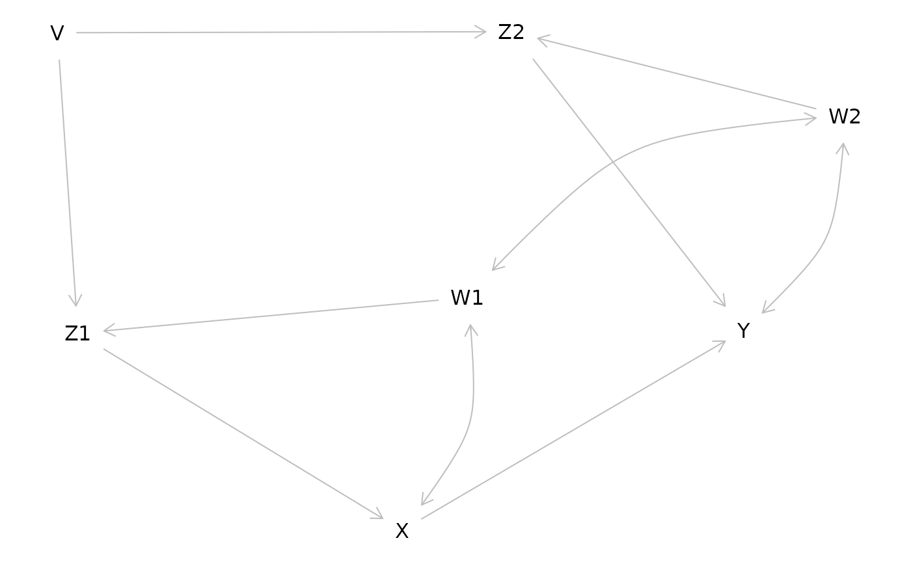

A SEM user's guide to dagitty for R
Johannes Textor
2026-06-14
Source:vignettes/dagitty4semusers.Rmd
dagitty4semusers.RmdWhat is dagitty
Dagitty is a software to analyze causal diagrams, also known as directed acyclic graphs (DAGs). Structural equation models (SEMs) can be viewed as a parametric form of DAGs, which encode linear functions instead of arbitrary nonlinear functions.
Because every SEM is a DAG, much of the methodology developed for DAGs is of potentially great interest for SEM users as well. In this vignette, I am going to show some possibilities. This follows the structure of Kyono’s “Commentator” program (http://ftp.cs.ucla.edu/pub/stat_ser/r364.pdf), and thereby also shows how the tasks implemented in that program can be solved using the dagitty package.
g1 <- dagitty( "dag {
W1 -> Z1 -> X -> Y
Z1 <- V -> Z2
W2 -> Z2 -> Y
X <-> W1 <-> W2 <-> Y
}")
g2 <- dagitty( "dag {
Y <- X <- Z1 <- V -> Z2 -> Y
Z1 <- W1 <-> W2 -> Z2
X <- W1 -> Y
X <- W2 -> Y
}")
plot(graphLayout(g1))
List testable implications of a structural equation model
print( impliedConditionalIndependencies( g1 ) )V _||_ W1
V _||_ W2
V _||_ X | W1, Z1
V _||_ Y | W1, W2, Z1, Z2
W1 _||_ Z2 | W2
W2 _||_ Z1 | W1
X _||_ Z2 | V, W2
X _||_ Z2 | W1, W2, Z1
Z1 _||_ Z2 | V, W2
Z1 _||_ Z2 | V, W1List adjustment sets for specific path coefficients
print( adjustmentSets( g1, "Z1", "X", effect="direct" ) ){ W1 }
print( adjustmentSets( g2, "X", "Y", effect="direct" ) ){ W1, W2, Z2 }
{ V, W1, W2 }
{ W1, W2, Z1 }List path coefficients that are identifiable by regression
for( n in names(g1) ){
for( m in children(g1,n) ){
a <- adjustmentSets( g1, n, m, effect="direct" )
if( length(a) > 0 ){
cat("The coefficient on ",n,"->",m,
" is identifiable controlling for:\n",sep="")
print( a, prefix=" * " )
}
}
}The coefficient on V->Z1 is identifiable controlling for:
{}
The coefficient on V->Z2 is identifiable controlling for:
{}
The coefficient on W1->Z1 is identifiable controlling for:
{}
The coefficient on W2->Z2 is identifiable controlling for:
{}
The coefficient on Z1->X is identifiable controlling for:
{ W1 }
The coefficient on Z2->Y is identifiable controlling for:
{ W1, W2, Z1 }
{ V, W2 }List adjustment sets for specific total effects
print( adjustmentSets( g1, "X", "Y" ) )
print( adjustmentSets( g2, "X", "Y" ) ){ W1, W2, Z2 }
{ V, W1, W2 }
{ W1, W2, Z1 }List total effects that are identifiable by regression
for( n in names(g1) ){
for( m in setdiff( descendants( g1, n ), n ) ){
a <- adjustmentSets( g1, n, m )
if( length(a) > 0 ){
cat("The total effect of ",n," on ",m,
" is identifiable controlling for:\n",sep="")
print( a, prefix=" * " )
}
}
}The total effect of V on Z2 is identifiable controlling for:
{}
The total effect of V on Y is identifiable controlling for:
{}
The total effect of V on Z1 is identifiable controlling for:
{}
The total effect of V on X is identifiable controlling for:
{}
The total effect of W1 on Z1 is identifiable controlling for:
{}
The total effect of W2 on Z2 is identifiable controlling for:
{}
The total effect of Z1 on X is identifiable controlling for:
{ W1 }
The total effect of Z1 on Y is identifiable controlling for:
{ W1, W2, Z2 }
{ V, W1 }
The total effect of Z2 on Y is identifiable controlling for:
{ W1, W2, Z1 }
{ V, W2 }List path coefficients that are identifiable through instrumental variables
for( n in names(g1) ){
for( m in children(g1,n) ){
iv <- instrumentalVariables( g1, n, m )
if( length( iv ) > 0 ){
cat( n, m, "\n" )
print( iv , prefix=" * " )
}
}
}V Z1
* Z2 | W1
V Z2
* X | W2
* Z1 | W2
W1 Z1
* W2
* Z2 | V
W2 Z2
* W1
* X | V
* Z1 | V
X Y
* V | W2, Z2
* Z1 | W1, W2, Z2
Z1 X
* V
* W2
* Z2
Z2 Y
* V | X
* W1 | X
* Z1 | X